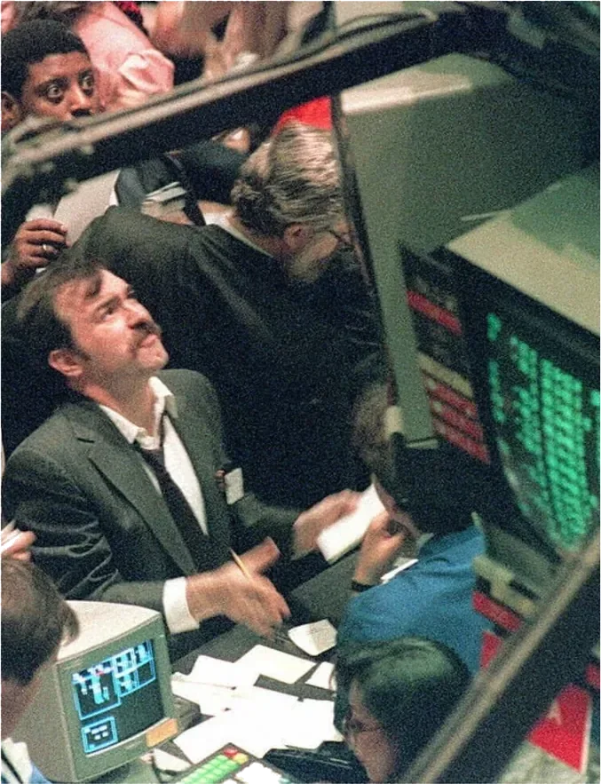
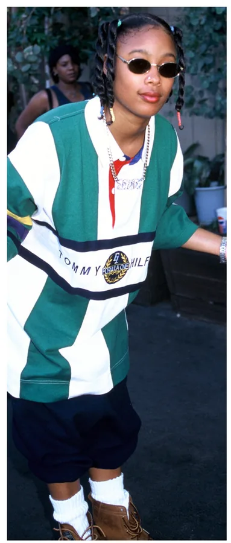
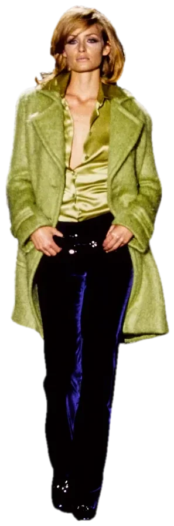
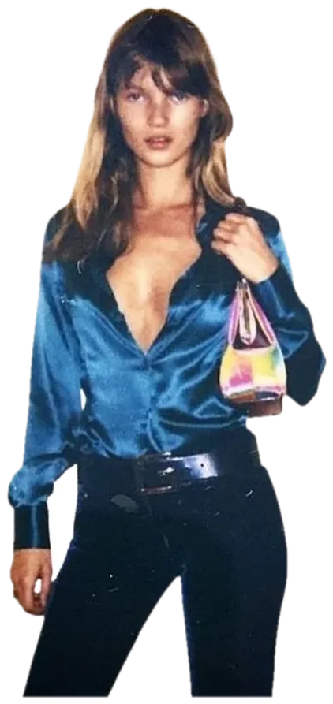

The 1990s didn’t invent minimalism. They couldn’t afford anything else.
In 1990, the United States entered a recession. Unemployment climbed. Consumer confidence collapsed. And on the runways of New York, something quietly revolutionary was happening: fashion was stripping itself bare. No more shoulder pads. No more power suits. No more gold chains and logomania. Just clean lines, neutral colors, and the deliberate absence of everything the 1980s had celebrated.
It was an economic choice, not an aesthetic one.
What Broke the 80s
To understand the 90s you have to understand what it was reacting against.
The 1980s were defined by visible, aggressive wealth. Reagan’s America. The rise of the yuppie. Wall Street. Dynasty shoulder pads. Versace logomania. Fashion in the 80s functioned exactly the way Byzantine purple had a thousand years earlier — as a loud, deliberate announcement of economic status. The louder the better. The more expensive the more powerful.
Then the economy collapsed.
The early 1990s recession hit hard and fast. Stock markets crashed. Unemployment spiked. The savings and loan crisis wiped out middle class wealth across America. The conspicuous consumption that had defined the previous decade suddenly felt not just excessive but obscene. Wearing a Versace logo across your chest when your neighbor had just lost their job was a different kind of statement than it had been in 1985.
Fashion, as it always does, responded immediately.
The Minimalism Deep Dive
In 1992 Calvin Klein sent a collection down the runway that would define the decade. No embellishment, no color, no logos. Just perfectly cut suits, slip dresses, and clean white shirts in muted neutrals — cream, grey, black, beige. The clothes were expensive but they didn’t look it. That was entirely the point.
This was minimalism as economic camouflage. In a decade defined by recession anxiety, dressing down became the new dressing up. The truly wealthy could afford to stop announcing themselves. They didn’t need logos anymore. The cut, the fabric, the fit whispered money to anyone who knew how to listen. Everyone else was left guessing.

Carolyn Bessette-Kennedy became the decade’s most iconic style figure not because she wore expensive clothes but because she wore expensive clothes that looked simple. A white slip dress. A clean wool coat. Nothing that screamed wealth — everything that implied it. She was the human embodiment of 90s minimalism’s central economic paradox: the most expensive thing you could wear was something that looked like it cost nothing.
What Everyone Else Wore
While Calvin Klein was perfecting the art of expensive simplicity, the rest of America was dressing for an entirely different economic reality.
Grunge emerged from Seattle’s working class music scene and spread across the country with a speed that had everything to do with economics and nothing to do with fashion. Flannel shirts because they were cheap and warm. Ripped jeans because you kept wearing them after they fell apart. Thrift store layers because that’s what you could afford. Kurt Cobain didn’t style himself, he just wore what he had.
The fashion industry’s response was immediate and telling. By 1993 Marc Jacobs had sent grunge down the Perry Ellis runway — flannel shirts, thermal underwear, and worn-in boots reinterpreted in luxury fabrics at luxury prices. Perry Ellis fired him for it. The fashion establishment wasn’t ready to admit that the most culturally relevant aesthetic of the decade had been invented by people who shopped at thrift stores.
Meanwhile hip hop was building its own parallel fashion economy entirely. Influenced by a different set of economic pressures — systemic poverty, the crack epidemic, the aftermath of Reaganomics in Black communities across America — hip hop fashion was doing something completely opposite to minimalism. It was maximalist, deliberate, and loud. Oversized everything. Timberlands. Gold jewelry. Tommy Hilfiger, FUBU, Polo Ralph Lauren worn in ways their designers never intended. This wasn’t logomania for the sake of excess, it was a reclamation of visibility by communities that had been economically and socially erased. The logo wasn’t showing off, but rather showing up.

Three completely different economic realities. Three completely different wardrobes. One decade.
When Minimalism Cracked
By the mid-90s the recession had eased and the economy was recovering. Fashion’s restraint began quietly loosening.
The dot-com boom was coming. A new generation of suddenly wealthy young people was about to arrive with money to spend and no interest in the quiet understatement of Calvin Klein minimalism.
By 1997 Tom Ford had transformed Gucci from a near-bankrupt heritage brand into the decade’s most provocative fashion house — velvet suits, plunging necklines, unapologetic sex and wealth on display. The minimalism era wasn’t over yet but its grip was slipping.
Then 1999 arrived. The economy was booming. Y2K anxiety was everywhere. And fashion was already moving toward the maximalism, logomania, and visible excess that would define the 2000s completely.


What Comes Next
The 2000s arrived with money, confidence, and absolutely no restraint. Paris Hilton. Von Dutch trucker hats. Juicy Couture tracksuits. Visible thongs and low rise jeans.
But underneath the maximalism something structural was shifting. Fast fashion was arriving, globalization was moving garment production overseas. And the 2008 financial crisis was coming, an economic collapse so total it would reshape the entire system that produced their clothes.
The decade that dressed like it had nothing to lose was about to lose everything. That’s next.